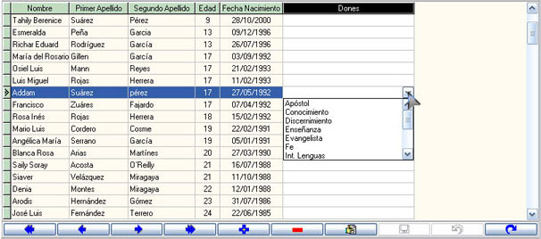
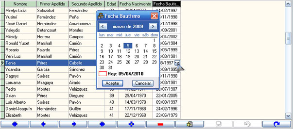

La Rejilla de Datos

Figura 33. La Rejilla de Datos o Cuadrícula (menú desplegable Dones).
Como se muestra en la figura 33, la rejilla de datos es multipropósito, le muestra los registros, le permite cambiar, borrar, añadir, etc., es decir, es la que manipula el trabajo con los miembros de la iglesia. Está contenida en la pestaña Tabla Maestra (además de estar presente en la pestaña Tabla Importar/Exportar), refleja los campos que usted halla seleccionado en la ventana de Configurar Tabla Maestra. Esta rejilla es el corazón de la aplicación. A continuación brindamos algunos detalles de su interés:
Nota: Antes de continuar con los detalles aclaramos que estamos tomando como ejemplo la rejilla de datos de la Tabla Maestra, pero que lo expuesto en este acápite es funcionable para todas las rejillas editables. Todos los cambios en todas las rejillas del programa (ancho de las columnas) son guardados automáticamente, de modo que cuando cierre el programa cada columna tendrá los cambios realizados sobre ella.
Puede cambiar también en la rejilla la posición de las columnas con solo arrastrar por el título la columna que desee mover de posición.
La columna seleccionada aparece de color diferente, en este caso: negro con letras blancas el título, y blanco con letras blancas los datos del miembro.
Puede cambiar también el ancho de las columnas al posicionar el puntero del mouse sobre la línea divisoria entre los títulos, y cuando el puntero cambie aarrastre hasta el tamaño deseado.
En algunos campos la entrada de datos es ayudada por un menú desplegable (ver el campo Dones en la figura 33), que se activa en cuanto posiciona el puntero de mouse sobre la casilla, en otros casos por un botón de acceso a una ventana (figura 34) desde donde podrá seleccionar los datos.
El programa está diseñado para corregir o advertir (en muchos casos) del tipo de datos que está introduciendo, usted puede probar y explotar todas estas ventajas.
La rejilla solo es accesible para editar con el candado abierto y esto está en dependencia con el tipo de consulta, si es editable o no.
Hay rejillas a las que no se tiene acceso porque de la que ella depende está en blanco o vacía. Por ejemplo, no puede introducir visitas si no existe miembro, no puede poner nombramientos si no hay fecha de los nombramientos, etc., de la misma manera ocurre con mucho otros paneles que no contienen rejillas, pero que dependen de otro dato que no se ha introducido.
En algunos casos el abandonar la cuadrícula sin guardar los cambios provoca que estos se guarden automáticamente, en otros casos es posible simplemente que estos cambios se ignoren. Usted puede hacer uso del botón guardar del navegador o de las teclas de acceso en caso de que sean funcionales (como el uso de Escape/Esc para abortar).
Como mismo observa la cuadrícula de los datos, así saldrá también (las mismas dimensiones y el mismo orden) en la impresión del informe. Ajuste el ancho de las columnas y pruebe previsualizando el informe, hasta que estas queden como usted desea.
El hecho de que una fila esté de otro color no necesariamente indica que esté seleccionada y que puede borrarse, etc., asegure siempre la selección mirando el panel Seleccionados de la Barra de Estado.

Figura 34. La Rejilla de Datos o Cuadrícula (botón de acceso).